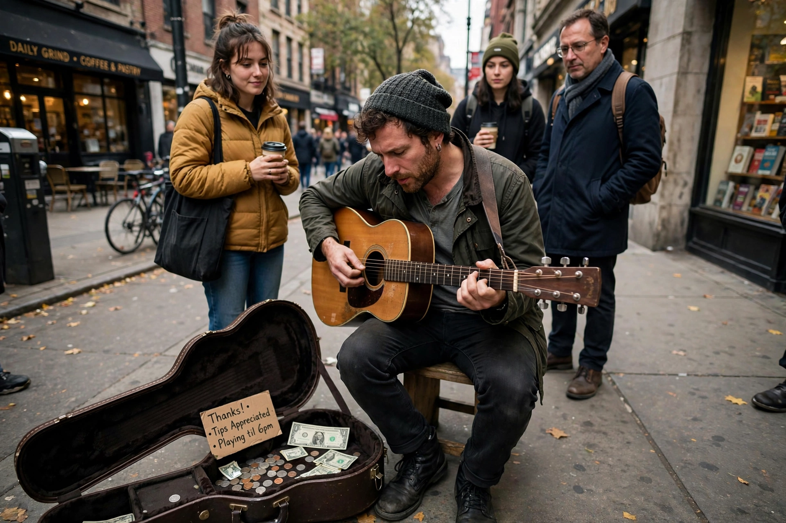

 A busker performing in a city square | |
| Medium | Live performance in public places |
|---|---|
| Forms | Music, magic, juggling, living statues, dance, comedy |
| Venues | Streets, squares, transit stations, markets |
| Remuneration | Voluntary tips from the public |
Busking is the activity of performing in public places, often for gratuities. In many countries the rewards are generally in the form of money but other gratuities such as food, drink or gifts may be given. People engaging in this practice are called street performers or buskers in the United Kingdom. Busking is legal in many cities, though it may be regulated by permits, designated pitches, and noise rules.
Street performance is ancient: minstrels, troubadours, and travelling players performed for coins in marketplaces throughout the medieval world. In the modern era, busking flourished in cities such as London, Paris, New Orleans, and New York, where subway and street performance became fixtures of urban culture. Many famous musicians — including Pierce Brosnan's contemporaries in other arts, and performers such as Ed Sheeran and Tracy Chapman — began or supplemented their careers with street performance.
Buskers perform music, magic ("close-up" and stage-style tricks), juggling and circus skills, acrobatics, dance, clowning, living-statue work, caricature and portrait drawing, puppetry, and "circle shows" in which a performer gathers and holds a crowd for a set routine ending with a "hat line" requesting payment. A pitch is the spot where a busker performs; in popular cities, buskers may operate informal rotas or audition for licensed pitches such as those in the London Underground.
The regulation of busking varies widely. Some cities celebrate it with festivals — the Edmonton International Street Performers Festival and the Halifax Busker Festival are among the largest — while others restrict amplification, locations, or hours. In the United States, street performance is generally protected as free expression, though reasonable time, place, and manner restrictions apply.